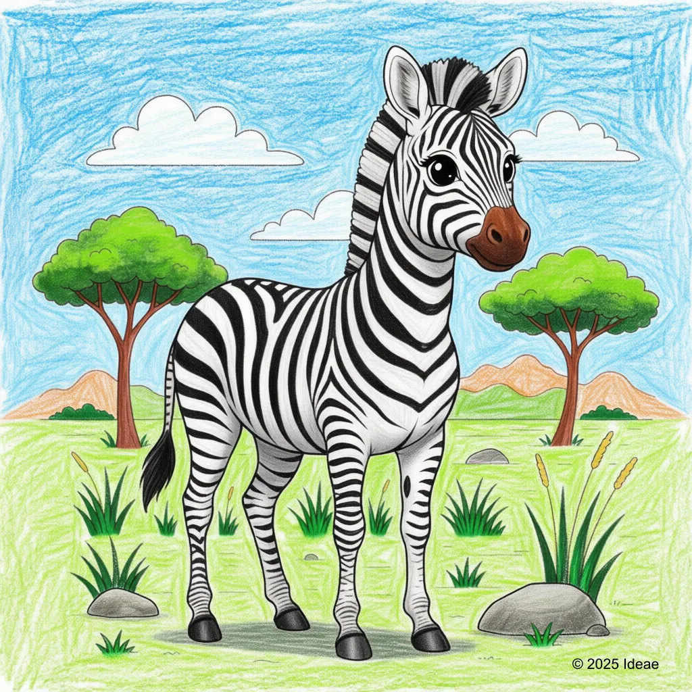

Zebra
Plains Zebra

Key Characteristics
- Zebras are known for their unique black and white stripes—no two Zebras have the exact same pattern!
- They travel in massive groups called 'dazzles,' which confuse predators like lions and hyenas.
- Zebras use their stripes to help regulate their body temperature in the hot African sun."
Peculiar Facts (Fun Facts!)
- Scientists think the stripes might help confuse biting flies and mosquitoes, keeping them away from the Zebra.
- When a baby Zebra is born, its stripes are actually brown and white, not black and white!
- Zebras have very strong kicks and will use them fiercely to defend themselves from danger.